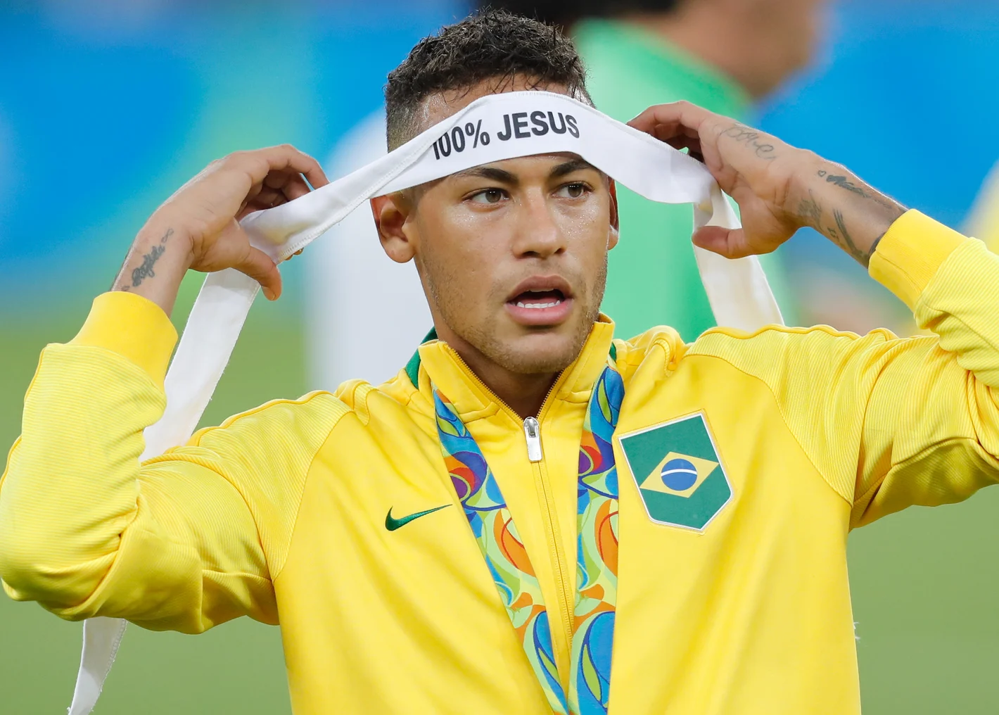
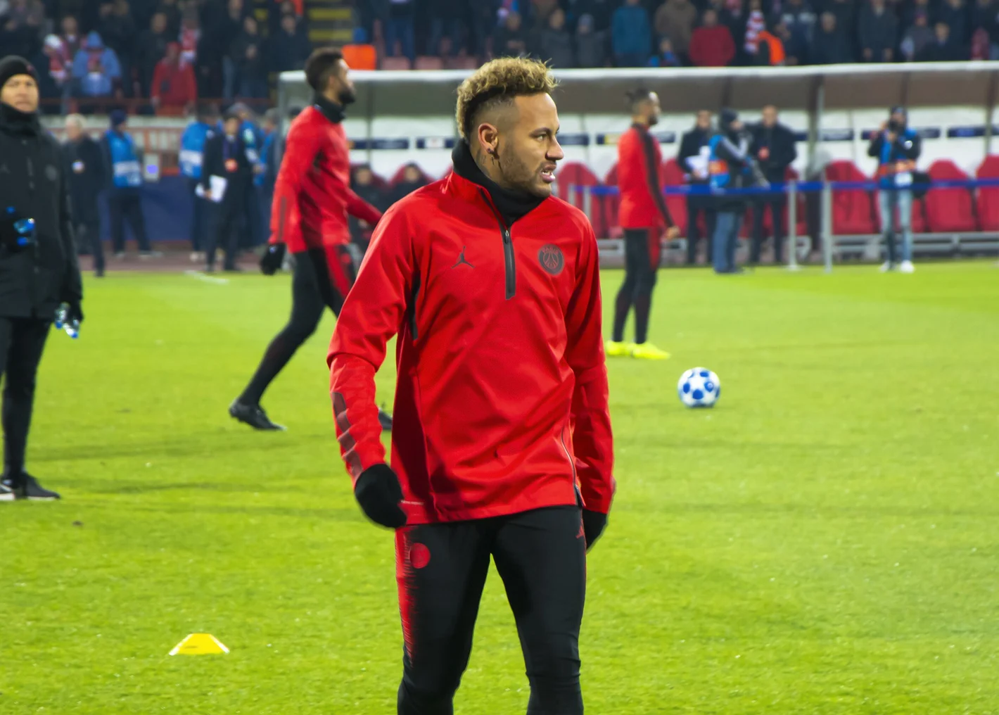
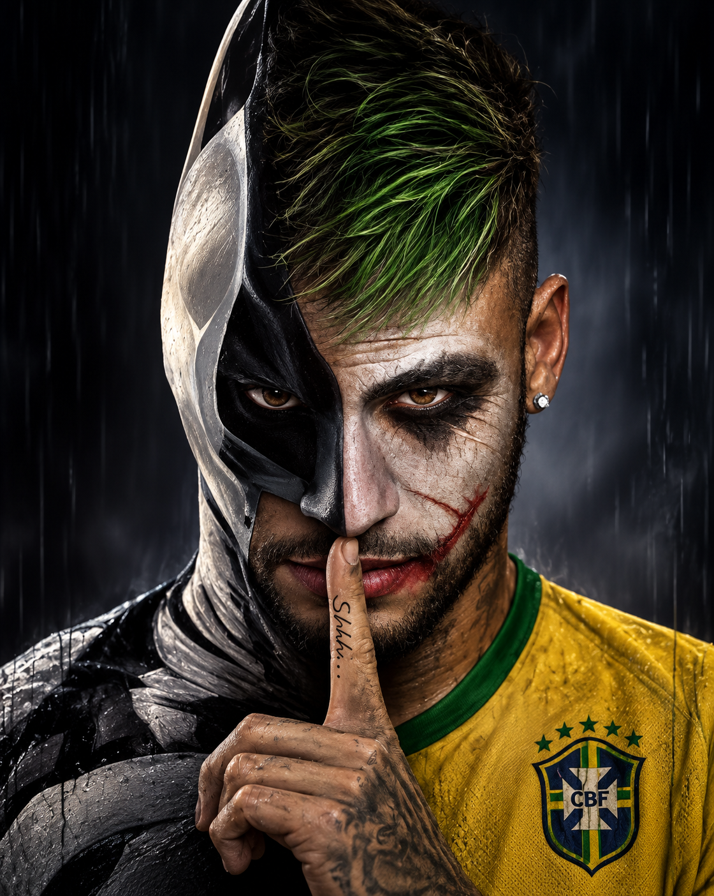

10
Neymar Jr · 2009 — 2026
Da Vila
para o mundo.
2011
Santos · 01 / 07
O menino da Vila.
Campeão da Libertadores aos 19 anos.
2013
Seleção · 02 / 07
Bola de Ouro.
Melhor jogador da Copa das Confederações.
2015
Barcelona · 03 / 07
A tríplice coroa.
Champions, La Liga e Copa do Rei.

2016
Rio de Janeiro · 04 / 07
O ouro olímpico.
O pênalti decisivo no Maracanã.

2017
Paris · 05 / 07
A maior transferência da história.
222 milhões de euros.
2023
Seleção · 06 / 07
Maior artilheiro da Seleção.
Passou Pelé.
2026
Copa do Mundo · 07 / 07
A quarta Copa.
E segue no Santos, onde tudo começou.

Ousadia
e alegria.
Neymar
Jr
0
gols
0
jogos
Camisa 10
Maior artilheiro da história da Seleção.